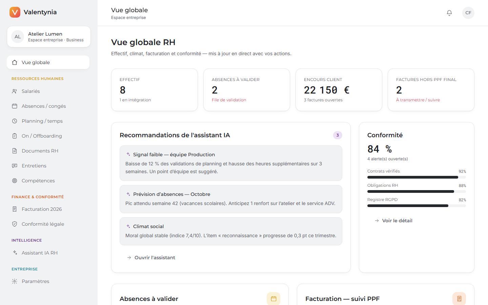
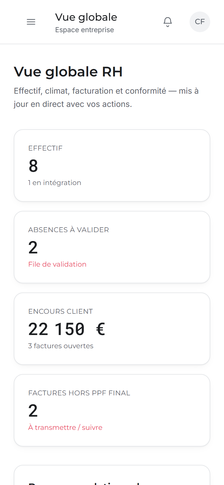
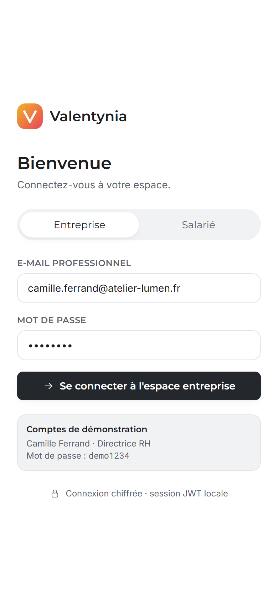
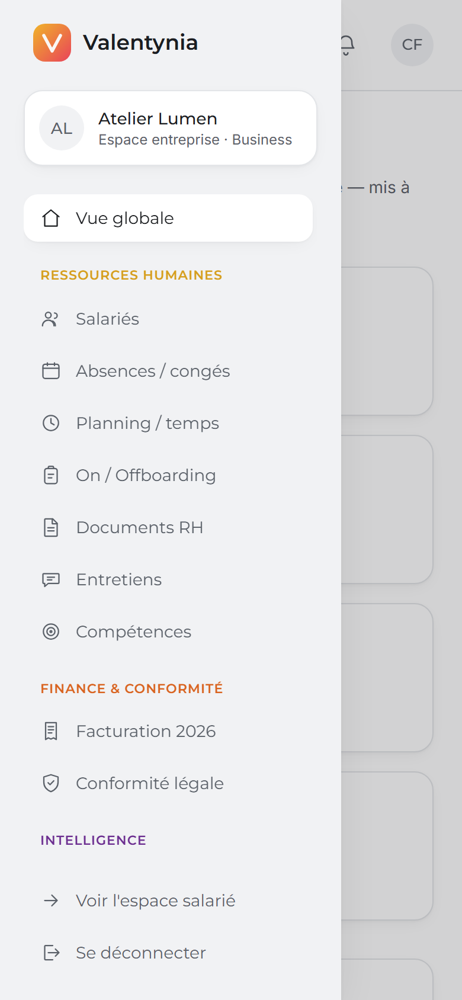

Titre professionnel Développeur Web et Web Mobile (DWWM) — Niveau 5
Dossier de projet
Valentynia — L'humain, simplement.
Plateforme SaaS de gestion RH et de facturation électronique
conforme à la réforme 2026 (Factur-X + Portail Public de Facturation), avec suivi de la conformité
légale et assistant IA RH — adaptée web et web mobile.
Candidat : Renaud Vaillant
Dépôt du code : https://github.com/thrax28700/valentynia
Application en ligne : https://valentynia.netlify.app (frontend Netlify · API Render · base Neon PostgreSQL)
Projet réalisé pendant la période de formation — session 2026
Sommaire
1. Liste des compétences du référentiel couvertes par le projet
2. Contexte et expression des besoins du projet
2.1 Présentation du projet
2.2 Expression des besoins
2.3 Contraintes du projet et livrables attendus
2.4 Environnement humain et technique, objectifs de qualité
3. Spécifications fonctionnelles
4. Spécifications techniques
5. Réalisations — partie front-end (CCP 1)
5.1 Maquettage des interfaces — adaptation web et web mobile
5.2 Schéma de l'enchaînement des maquettes
5.3 Interfaces statiques — web et web mobile
5.4 Interfaces dynamiques
5.5 Sécurité côté front-end
6. Réalisations — partie back-end (CCP 2)
6.1 Base de données relationnelle
6.2 Composants d'accès aux données
6.3 Composants métier côté serveur
6.4 Sécurité côté back-end
7. Éléments de sécurité de l'application — synthèse
8. Jeu d'essai de la fonctionnalité la plus représentative
9. Veille sur les vulnérabilités de sécurité
10. Documentation du déploiement
11. Difficultés rencontrées et solutions
12. Gestion de projet
13. Synthèse et conclusion
14. Annexes — fonctionnalité la plus représentative (Factur-X)
1. Liste des compétences du référentiel couvertes par le projet
Le projet Valentynia a été conçu pour mettre en œuvre l'ensemble des compétences exigées par le
Référentiel d'Évaluation (RE) du titre professionnel Développeur Web et Web Mobile pour l'épreuve
« Présentation d'un projet réalisé en amont de la session ».
Activité type 1 — Développer la partie front-end d'une application web ou web mobile sécurisée
Maquetter des interfaces utilisateur web ou web mobile — § 5.1, § 5.2
Réaliser des interfaces utilisateur statiques web ou web mobile — § 5.3
Développer la partie dynamique des interfaces utilisateur web ou web mobile — § 5.4
Activité type 2 — Développer la partie back-end d'une application web ou web mobile sécurisée
Mettre en place une base de données relationnelle — § 6.1
Développer des composants d'accès aux données SQL et NoSQL — § 6.2
Développer des composants métier côté serveur — § 6.3
Compétences complémentaires également illustrées (non obligatoires)
Installer et configurer son environnement de travail en fonction du projet web ou web mobile — § 4, § 12
Documenter le déploiement d'une application dynamique web ou web mobile — § 10
Les recommandations de sécurité propres à chaque activité type sont traitées au fil
des réalisations (§ 5.5, § 6.4) et synthétisées en § 7. Le jeu d'essai et la
veille sur les vulnérabilités de sécurité, exigés par le référentiel, font l'objet de
sections dédiées (§ 8 et § 9).
Nature du projet. Valentynia est un projet réalisé pendant la période de
formation : il ne répond pas à la commande d'un client réel, mais à une expression des
besoins formulée par le candidat. Pour lui donner un ancrage concret et vérifiable, le projet
simule l'usage réel du logiciel par une entreprise cliente fictive, « Atelier Lumen » (PME de 142
salariés), qui sert de support de démonstration et de jeu de données tout au long du dossier.
2. Contexte et expression des besoins du projet
2.1 Présentation du projet
Valentynia est une plateforme SaaS (Software as a Service) de gestion des
ressources humaines et de facturation électronique, destinée aux petites et moyennes entreprises.
Le candidat en est à la fois le concepteur et le développeur, du cadrage du besoin jusqu'au
déploiement en production.
Figure 1 — Site vitrine : page d'accueil présentant la proposition de valeur.
2.2 Expression des besoins
Deux constats ont guidé la définition du besoin :
La gestion RH des PME est fragmentée. Dossiers du personnel, congés, plannings,
entretiens et documents sont répartis entre tableurs, boîtes mail et prestataires. Les soldes de
congés sont calculés manuellement et le salarié n'a pas d'accès direct à ses propres données.
La réforme de la facturation électronique impose de nouveaux outils. À partir de
2026, la réception de factures électroniques structurées devient obligatoire pour toutes les
entreprises, et l'émission le devient progressivement, via des formats normalisés (Factur-X, CII)
transmis par une plateforme agréée, avec conservation d'une piste d'audit inaltérable.
Objectifs du projet : réunir dans une plateforme unique la gestion RH, la
facturation conforme 2026, le suivi de la conformité légale et un assistant IA RH, avec deux espaces
(entreprise et salarié) accessibles aussi bien depuis un poste de travail que depuis un mobile.
Limites du projet : l'intégration réelle à l'API du Portail Public de Facturation
n'est pas réalisée (accès de production non disponibles à ce stade) — un client en mode simulation la
remplace ; l'assistant IA repose sur des règles locales plutôt que sur un fournisseur de modèle de
langage externe.
2.3 Contraintes du projet et livrables attendus
Contrainte
Réponse apportée
Sécurité des données RH (IBAN, n° de sécurité sociale)
Chiffrement AES-256-GCM au repos, affichage masqué
Conformité à la réforme 2026
Génération Factur-X (EN 16931), cycle PPF, archivage 10 ans, journal anti-fraude TVA
Utilisation web et web mobile
Interface responsive testée sur les 19 écrans applicatifs (§ 5.1 à 5.3)
Budget
Hébergement sur offres gratuites (Netlify, Render, Neon)
Délai
Développement itératif par lots livrables (§ 12)
Livrables attendus : code source versionné et documenté, base de données
déployée et amorcée, application accessible en ligne, jeu de tests automatisés, documentation du
déploiement, dossier de projet et support de présentation.
2.4 Environnement humain et technique, objectifs de qualité
Environnement humain : projet mené en autonomie complète (candidat unique :
conception, développement, tests, déploiement, documentation).
Environnement technique : voir le détail en § 4.1. En résumé : React 18 /
TypeScript / Vite / Tailwind CSS / TanStack Query côté front-end ; Node.js / Express / TypeScript /
Prisma / PostgreSQL côté back-end ; Git / GitHub pour le versionnement ; Netlify, Render et Neon pour
l'hébergement.
Objectifs de qualité : typage strict TypeScript des deux côtés, validation
systématique des entrées (Zod), séparation claire des responsabilités (modules par domaine métier),
jeu de tests automatisés couvrant les fonctions critiques, revue de sécurité alignée sur l'OWASP Top
10, accessibilité des formulaires (association label/champ), et vérification effective du
fonctionnement sur mobile (absence de débordement horizontal sur les 19 écrans applicatifs).
3. Spécifications fonctionnelles
3.1 Acteurs et cas d'usage
Acteur
Cas d'usage principaux
Gestionnaire RH / Administrateur
Gérer les dossiers salariés · Émettre une facture Factur-X · Transmettre au PPF et suivre le cycle · Lancer un parcours d'onboarding · Piloter les campagnes d'entretiens · Traiter les alertes de conformité
Manager
Valider une demande d'absence · Cocher les tâches d'un parcours d'intégration
Salarié
Déposer une demande d'absence · Consulter bulletins et documents · Mettre à jour ses coordonnées · Interroger l'assistant IA
3.2 User stories principales
#
En tant que…
je veux…
afin de…
US-01
gestionnaire RH
créer un dossier salarié avec son contrat et ses coordonnées bancaires
centraliser l'information et sécuriser les données sensibles
US-02
salarié, depuis son mobile
déposer une demande de congés
obtenir une validation sans passer par l'e-mail, où que je sois
US-03
manager
valider ou refuser une demande en un clic
que le solde de congés du salarié soit mis à jour automatiquement
US-04
gestionnaire RH
générer une facture au format Factur-X
être conforme à la réforme 2026 et disposer du XML normalisé
US-05
gestionnaire RH
transmettre la facture au PPF et suivre son statut
savoir si elle est reçue, acceptée, rejetée ou encaissée
US-06
administrateur
consulter un journal TVA inaltérable
répondre à un contrôle de l'administration fiscale
US-07
gestionnaire RH
lancer un parcours d'intégration pour un nouvel arrivant
ne rien oublier grâce à une checklist type
US-08
salarié, en déplacement
consulter mes bulletins depuis mon téléphone
ne plus solliciter le service RH pour ces demandes courantes
Les routes /app/* et /espace/* sont protégées par un composant de garde
(RequireAuth) qui vérifie la session et le rôle. Cette arborescence est identique en web
et en web mobile : le responsive s'opère par adaptation de la mise en page (§ 5.1) et non par des
routes distinctes.
4. Spécifications techniques
4.1 Choix de la pile technologique
Couche
Technologie
Justification
Front-end
React 18
Bibliothèque de référence, composants réutilisables, large écosystème.
TypeScript
Typage statique : erreurs détectées à la compilation, meilleure maintenabilité.
Vite 5
Serveur de développement instantané (HMR), build de production optimisé.
Tailwind CSS 3
Design system cohérent par classes utilitaires ; points de rupture responsive intégrés (web / web mobile).
React Router 6 · TanStack Query 5
Routage déclaratif ; gestion professionnelle du cache de données serveur (invalidation ciblée, états de chargement/erreur, dé-duplication des requêtes).
Back-end
Node.js + Express 4
Même langage que le front (une seule stack), framework minimaliste et maîtrisé.
TypeScript
Cohérence avec le front, sécurité de typage jusqu'aux requêtes SQL.
Prisma 5 (ORM)
Schéma unique, migrations versionnées, requêtes typées et paramétrées (protection contre l'injection SQL).
PostgreSQL
SGBD relationnel robuste : contraintes d'intégrité, transactions, types précis (Decimal pour les montants), hébergement managé Neon.
Authentification, hachage, en-têtes de sécurité, validation d'entrée, anti-force-brute.
node:crypto (AES-256-GCM)
Chiffrement authentifié des données sensibles au repos.
Qualité
ESLint · tsc --noEmit
Analyse statique et vérification de types.
Vitest · Supertest
Tests unitaires (fonctions pures) et tests d'intégration HTTP de l'API.
Environnement de travail
VS Code, Git/GitHub, Neon CLI, Playwright (vérification navigateur)
Outils installés et configurés pour le projet (versionnement, gestion de base distante, tests navigateur web et mobile).
Déploiement
Netlify · Render · Neon
Trois offres gratuites, déploiement automatique à chaque git push.
4.2 Architecture applicative
flowchart TD
B["Navigateur — SPA React (Netlify) — web & web mobile"] -->|HTTPS / JSON + JWT| A["API REST Express + Prisma (Render)"]
A -->|TLS| D[("PostgreSQL Neon")]
A -.->|mode simulation| P["Portail Public de Facturation"]
subgraph API["API modulaire (un routeur par domaine)"]
M1[auth] --- M2[hr] --- M3[billing]
M4[compliance] --- M5[ai] --- M6[dashboard] --- M7[company]
end
L'architecture est une application monopage qui consomme une API REST
sans état. La même application sert indifféremment le web et le web mobile : il n'y a pas de
code spécifique par plateforme, l'adaptation se fait par CSS responsive (Tailwind), testée sur les 19
écrans (§ 5.1). L'API est organisée en modules par domaine métier.
5.1 Maquettage des interfaces — adaptation web et web mobile
Le maquettage a été mené sous forme d'un design system codé : un ensemble de
composants réutilisables (src/components/ui.tsx), documenté par une charte, et éprouvé
directement sur les écrans réels — en web comme en web mobile.
Charte graphique
Une première version (fond crème, accent rose unique) a été retravaillée après retour
utilisateur : fond blanc, neutres gris froids, accent principal neutre, et une couleur
dédiée par domaine métier — pour un ton professionnel et une navigation où le module actif
se reconnaît immédiatement. Le rouge est désormais réservé aux seuls refus et erreurs, jamais utilisé
comme couleur de marque.
Rôle
Jeton
Valeur
Fond de page
cream
#FFFFFF
Texte et titres
prune
#1C1E21
Accent principal (boutons, liens, état actif)
powder
#24272C
Erreurs, refus, alertes critiques
danger
#E9435A
Succès / validation
sage
#D8E7DE
Module Ressources humaines
gold
#F0B429
Module Finance & conformité
orange
#F2762E
Module Intelligence (assistant IA)
violet
#6C2E90
Module Entreprise / accent secondaire
teal
#2FB1C7
Typographies : Montserrat SemiBold (titres), Inter (texte), Roboto Mono
(chiffres et tableaux) — une seule famille sans-serif par usage, pour un rendu net et neutre.
Formes : coins arrondis modérés (boutons rectangulaires, pas de forme en pilule),
ombres douces, iconographie au trait fin.
Adaptation web mobile : parti pris desktop-first avec points de rupture
Tailwind (sm, lg, xl) ; la barre latérale de l'application
devient un menu accessible par une icône « burger » sous 1024 px ; les tableaux défilent
horizontalement dans leur propre conteneur sans faire déborder la page ; les grilles de cartes
passent d'une à trois colonnes selon la largeur.
Comparatif web / web mobile — écrans représentatifs

Web (1440 px)

Web mobile (390 px)
Figure 2 — Tableau de bord entreprise, adaptation web et web mobile.
Web

Web mobile
Figure 3 — Écran de connexion, adaptation web et web mobile.
Ce schéma est identique en web et en web mobile : seule la présentation de la barre de navigation
change (barre latérale fixe en web ≥ 1024 px, menu « burger » en web mobile — figure 4), la
logique de navigation et les routes restent les mêmes.

Figure 4 — Menu de navigation ouvert en web mobile (icône « burger », 390 px).
5.3 Interfaces statiques — web et web mobile
Le site vitrine (accueil, tarifs) est une interface statique intégrée en React + Tailwind :
structure sémantique HTML, grilles responsives, composants de présentation. Vérifiée sans
débordement horizontal en web mobile (390 px).
Les 17 écrans applicatifs (hors vitrine) sont dynamiques : ils lisent et écrivent des données via
l'API, en web comme en web mobile (même code, adaptation CSS uniquement).
a) Client HTTP typé
export async function api<T>(path: string, opts: Options = {}): Promise<T> {
const token = getToken();
const headers: Record<string, string> = {};
if (opts.body !== undefined) headers['Content-Type'] = 'application/json';
if (token) headers.Authorization = `Bearer ${token}`;
const res = await fetch(`${BASE}${path}`, {
method: opts.method ?? (opts.body !== undefined ? 'POST' : 'GET'),
headers, body: opts.body !== undefined ? JSON.stringify(opts.body) : undefined, signal: opts.signal,
});
const data = res.status === 204 ? null : await res.json().catch(() => null);
if (!res.ok) {
if (res.status === 401) setToken(null);
throw new ApiError(res.status, data?.error ?? `Erreur ${res.status}`);
}
return data as T;
}
src/lib/auth.tsx fournit un contexte React : connexion, récupération de la session
via useQuery, jeton en état réactif synchronisé entre onglets. RequireAuth
garde les routes selon la session et le rôle.
Figure 7 — Absences : file de validation, saisie en modale, décompte du solde en direct.
5.5 Sécurité côté front-end
Risque
Mesure mise en œuvre
Injection de scripts (XSS)
Rendu React échappant par défaut ; aucun dangerouslySetInnerHTML.
Exposition de données sensibles
L'IBAN n'est jamais transmis en clair : l'API n'expose que les 4 derniers chiffres.
Contrôle d'accès contourné
Garde RequireAuth par rôle + double contrôle systématique côté serveur.
datasource db {
provider = "postgresql"
url = env("DATABASE_URL") // connexion "pooled" (PgBouncer)
directUrl = env("DIRECT_URL") // connexion directe pour `prisma migrate`
}
model Absence {
id String @id @default(cuid())
employeeId String
employee Employee @relation(fields: [employeeId], references: [id], onDelete: Cascade)
type AbsenceType
startDate DateTime
endDate DateTime
days Float
status AbsenceStatus @default(PENDING)
decidedById String?
decidedAt DateTime?
createdAt DateTime @default(now())
@@index([employeeId, status])
}
-- Migration SQL générée par Prisma (extrait)
CREATE TABLE "Absence" (
"id" TEXT NOT NULL,
"employeeId" TEXT NOT NULL,
"type" "AbsenceType" NOT NULL,
"startDate" TIMESTAMP(3) NOT NULL,
"endDate" TIMESTAMP(3) NOT NULL,
"days" DOUBLE PRECISION NOT NULL,
"status" "AbsenceStatus" NOT NULL DEFAULT 'PENDING',
CONSTRAINT "Absence_pkey" PRIMARY KEY ("id")
);
ALTER TABLE "Absence" ADD CONSTRAINT "Absence_employeeId_fkey"
FOREIGN KEY ("employeeId") REFERENCES "Employee"("id") ON DELETE CASCADE;
CREATE INDEX "Absence_employeeId_status_idx" ON "Absence"("employeeId", "status");
Choix de conception : cloisonnement multi-entreprise systématique
(companyId sur presque toutes les tables), suppressions en cascade, types
Decimal(12,2) pour les montants (évite les erreurs d'arrondi des flottants),
énumérations pour les statuts, connexion pooled pour l'application et connexion directe
réservée aux migrations.
6.2 Composants d'accès aux données
Toutes les lectures et écritures passent par Prisma Client, qui génère des
requêtes paramétrées (aucune concaténation de chaîne SQL → injection neutralisée).
Une couche de sérialisation (src/lib/serialize.ts) transforme les
entités Prisma en objets de transfert (DTO) et applique un déchiffrement tolérant de l'IBAN
pour l'affichage masqué (voir § 9, veille sur les vulnérabilités).
6.3 Composants métier côté serveur
Absences : à la validation d'un congé payé ou d'un RTT, le solde est décrémenté
dans une transaction pour garantir l'atomicité.
Factur-X : calcul des totaux avec arrondi au centime, génération du XML
Cross-Industry Invoice (UN/CEFACT, profil EN 16931), empreinte SHA-256.
Journal anti-fraude TVA : chaque écriture intègre l'empreinte de la précédente ;
une fonction de vérification recalcule toute la chaîne.
Association label/champ systématique, navigation clavier des modales (Échap)
Le détail de chaque mesure et sa correspondance avec l'OWASP Top 10 figurent en § 5.5 (front-end)
et § 6.4 (back-end).
8. Jeu d'essai de la fonctionnalité la plus représentative
La fonctionnalité retenue comme la plus représentative du projet est la création d'une
facture Factur-X et sa transmission au Portail Public de Facturation : elle mobilise à la
fois le front-end (formulaire, calcul en direct), le back-end (génération du XML normalisé,
empreinte, écriture du journal TVA) et la sécurité (contrôle d'accès par rôle, validation stricte).
8.1 Jeu d'essai manuel — données en entrée / attendues / obtenues
Donnée en entrée
Résultat attendu
Résultat obtenu
Écart
1 ligne : « Audit », qté 1, PU HT 1000 €, TVA 20 %
Total HT 1000,00 € / TVA 200,00 € / TTC 1200,00 €
1000,00 € / 200,00 € / 1200,00 €
Aucun
2 lignes, TVA 20 % et 10 %
Totaux cumulés avec arrondi au centime
HT 249,99 € / TVA 45,00 € / TTC 294,99 €
Aucun
Validation du formulaire
XML CII généré, statut DRAFT, empreinte SHA-256 présente
XML conforme (profil EN16931, TypeCode 380), empreinte 64 car. hex
Aucun
Clic « Transmettre au PPF »
Statut avance à DEPOSITED/RECEIVED_BY_PPF (simulation), journal TVA étendu de 1 écriture
Conforme
Aucun
Compte EMPLOYEE tente POST /billing/invoices
403 Accès refusé
403
Aucun
Requête sans jeton
401
401
Aucun
Vérification de la chaîne du journal TVA après création
{ ok: true }
{ ok: true }
Aucun
Ce jeu d'essai a été exécuté manuellement (interface, § captures figure 9) et automatiquement
(tests d'intégration, § 8.2). Aucun écart n'a été constaté entre le résultat attendu et le résultat
obtenu.
Figure 9 — Formulaire de création de facture : total HT / TVA / TTC recalculé en direct.
8.2 Complément — jeu d'essai automatisé (23 tests)
Au-delà de la fonctionnalité la plus représentative, l'ensemble de l'application est couvert par
23 tests automatisés (Vitest + Supertest), exécutés sur une branche PostgreSQL dédiée.
#
Cas testé
Résultat attendu
Obtenu
T1-T4
Chiffrement AES-256-GCM (aller-retour, IV aléatoire, altération détectée, masquage)
Conforme
OK
T5-T9
Factur-X (totaux, XML EN 16931, échappement, empreinte)
Conforme
OK
T10-T16
API : santé, authentification, 401/403, cloisonnement, liste des salariés
Conforme
OK
T17
Décompte du solde de congés à la validation
Solde décrémenté du nombre de jours
OK
T18-T21
Journal TVA, création facture, cycle PPF
Conforme
OK
T22-T23
Agrégats du tableau de bord, entité de démonstration
Conforme
OK
23 / 23 tests au vert (npm test, dossier backend/).
9. Veille sur les vulnérabilités de sécurité
9.1 Démarche de veille
Une veille a été menée tout au long du projet sur les vulnérabilités de sécurité propres aux
technologies utilisées : bulletins OWASP Top 10 et OWASP Cheat Sheet Series,
avis npm audit sur les dépendances, recommandations ANSSI et CNIL sur le chiffrement et
la conservation des données RH, changelogs de sécurité des bibliothèques (Prisma, Express, Helmet).
9.2 Vulnérabilité trouvée et corrigée pendant le projet
Constat. Après le déploiement en production, la route
GET /api/hr/employees renvoyait une erreur 500 : la clé AES_KEY
configurée sur l'hébergeur de production différait de celle utilisée lors du chiffrement des IBAN
en base. La fonction decrypt() levait une exception (échec d'authentification GCM),
non rattrapée, qui faisait échouer l'intégralité de la réponse — un seul enregistrement illisible
rendait la liste entière indisponible (risque de disponibilité).
Correction apportée : introduction d'une fonction tryDecrypt() qui
intercepte l'échec de déchiffrement et renvoie null plutôt que de laisser l'exception se
propager ; la sérialisation d'un salarié dont la donnée est illisible ne fait plus échouer la
réponse.
export function tryDecrypt(payload: string | null | undefined): string | null {
if (!payload) return null;
try {
return decrypt(payload);
} catch {
return null; // donnée illisible (clé pivotée, corruption) : ne casse pas la réponse
}
}
Mesure complémentaire : alignement strict des secrets entre les environnements de
développement et de production, et documentation de la procédure de génération de clé dans
DEPLOYMENT.md, pour éviter la récidive.
9.3 Autres points de vigilance suivis
Limitation de débit initialement restreinte à la route d'authentification ;
étendue à une limitation globale après revue, pour limiter les risques d'abus sur l'ensemble de
l'API.
Dépendances : suivi de npm audit (2 avertissements de sévérité
modérée à la date de rédaction, sans exploitation connue, sur des dépendances de développement).
Stockage du jeton côté client (localStorage) identifié comme
surface d'exposition en cas de XSS ; évolution prévue vers un cookie httpOnly +
jeton de rafraîchissement (§ 13).
10. Documentation du déploiement
Composant
Hébergeur
Rôle
Frontend
Netlify
Distribution du bundle statique, réécriture SPA
API
Render (Web Service)
Exécution du serveur Node, health check /api/health
Variables à renseigner : DATABASE_URL, DIRECT_URL, AES_KEY
(64 hexadécimaux), CORS_ORIGIN ; JWT_SECRET généré automatiquement. Le
frontend est construit avec VITE_API_URL pointant vers l'API Render ; le fichier
public/_redirects assure le routage côté client sur Netlify. Le
déploiement est automatique à chaque git push sur main
(API et frontend). Procédure complète : fichier DEPLOYMENT.md du dépôt.
10.1 Vérification en conditions réelles
Au-delà de la configuration initiale, chaque brique a été recontrôlée directement sur les
services en ligne plutôt que supposée fonctionnelle :
GET /api/health sur l'API Render → {"status":"ok"}, y compris après un
redémarrage à froid (offre gratuite, mise en veille après 15 min d'inactivité, ~30-50 s de réveil).
Authentification testée directement depuis l'origine du site (en-tête Origin du
domaine Netlify) pour confirmer que la politique CORS autorise réellement le
frontend déployé, et pas seulement localhost.
Migration Prisma appliquée à la base partagée puis revérifiée sans écriture : un
appel intentionnellement invalide déclenche une erreur de validation qui liste les valeurs
désormais acceptées, confirmant que le nouveau code tourne en production sans modifier de
donnée existante.
Redéploiement automatique confirmé de bout en bout : un git push sur
main déclenche effectivement un nouveau build sur Render, sans action manuelle.
Application en ligne et vérifiée : https://valentynia.netlify.app (API :
https://valentynia-api.onrender.com/api/health).
11. Difficultés rencontrées et solutions
11.1 Front-end initialement non connecté à l'API
Problème : la première version du front fonctionnait sur des données simulées en
localStorage ; le back-end n'était jamais appelé. Solution : refonte vers TanStack Query et des appels REST réels, sur une branche
dédiée. Les 19 écrans ont été recâblés et vérifiés.
11.2 Le serveur compilé ne démarrait pas en production
Problème :node dist/server.js échouait
(ERR_MODULE_NOT_FOUND) : TypeScript n'ajoute pas l'extension .js aux
imports relatifs, que le résolveur ESM de Node exige. Solution : bundle esbuild en un fichier dist/server.cjs.
11.3 Contraintes de l'offre gratuite d'hébergement
Problème : la commande pre-deploy n'est pas disponible en offre
gratuite ; npm ci ignore les devDependencies quand
NODE_ENV=production, or le build en a besoin. Solution : migration intégrée à la commande de build,
npm ci --include=dev.
11.4 Association label/champ manquante (accessibilité)
Problème : sur l'écran Paramètres, des champs étaient composés d'un
<label> et d'un <input> frères plutôt qu'imbriqués : pas
d'association accessible (RGAA), détecté lors d'un test automatisé au clavier. Solution : migration vers le composant Field qui imbrique l'
input dans son label.
11.5 Absence de parcours d'intégration à la création d'un salarié
Problème : créer un salarié positionnait son statut à « Onboarding » sans créer
de parcours associé — l'écran Onboarding, qui liste des parcours et non des salariés,
restait vide pour le nouvel arrivant. Solution : la création d'un salarié génère désormais, dans la même transaction, un
parcours d'intégration avec sa checklist type.
11.6 Clé de chiffrement différente entre environnements
Voir le détail en § 9.2 (traité comme vulnérabilité de disponibilité).
11.7 Frontend et API déployés séparément mais jamais reliés
Problème : le frontend avait été publié une première fois sur Netlify par simple
dépôt manuel d'une archive, sans variable VITE_API_URL renseignée. Le site public
chargeait bien la page, mais tout appel à /api/… retombait sur la page HTML de la
SPA elle-même (redirection générique) au lieu d'atteindre l'API Render : aucune donnée
ne s'affichait, sans erreur visible immédiatement. Solution : diagnostic par appel direct de /api/health sur le domaine
Netlify pour confirmer l'absence de relais vers l'API ; variable VITE_API_URL
renseignée, site reconstruit et republié ; authentification et CORS revérifiés depuis
l'origine réelle du site (§ 10.1) plutôt que depuis un environnement local qui masquait le
problème.
12. Gestion de projet
12.1 Méthode
Développement itératif et incrémental, par lots livrables et testables :
environnement et base de données → API REST complète → interfaces front-end → sécurité et tests →
déploiement → vérification mobile → documentation. Chaque lot se termine par une vérification avant
de passer au suivant.
12.2 Versionnement
Git + GitHub, dépôt public, commits atomiques à message explicite, branche de
fonctionnalité pour la refonte front-end fusionnée sans fast-forward. .gitignore
exclut les secrets et les artefacts de build.
Commit (extrait)
Objet
Import initial de Valentynia
Base du monorepo
Connexion à PostgreSQL (Neon), migration initiale
Mise en place BDD
API REST complète (HR, dashboard, entreprise, facturation)
Back-end
Câblage complet des 19 pages sur l'API (TanStack Query)
Front-end
Durcissement sécurité, tests automatisés, build de production
Sécurité / tests
Configuration de déploiement (Render + Netlify + Neon)
Déploiement
Fonctionnel : brancher les actions restées décoratives
Audit fonctionnel complet
Refonte de la charte graphique (ton neutre, couleur par domaine) + vérification bout-en-bout du déploiement
Retour utilisateur, mise en production réelle
12.3 Environnement de travail
Installation et configuration : VS Code, Node.js, Git, gh CLI, Neon CLI (gestion de
base distante), Playwright (vérification automatisée web et mobile dans un navigateur réel).
13. Synthèse et conclusion
Le projet a atteint ses objectifs : une application web full-stack fonctionnelle et
déployée, utilisable aussi bien sur poste de travail que sur mobile, couvrant la gestion RH,
la facturation conforme à la réforme 2026, le suivi de la conformité et un assistant IA.
L'ensemble des compétences exigées par le référentiel a été mis en œuvre : maquettage web et web
mobile, interfaces statiques et dynamiques, base de données relationnelle, composants d'accès aux
données et composants métier, sécurité, jeu d'essai et veille sur les vulnérabilités.
Satisfactions
Une application réellement déployée, utilisable et vérifiée de bout en bout en conditions
réelles — pas seulement une démonstration locale (§ 10.1).
Le journal anti-fraude TVA chaîné et vérifiable, qui démontre une logique métier avancée.
L'adaptation web mobile, vérifiée sans débordement sur les 19 écrans applicatifs.
Une charte graphique retravaillée après retour utilisateur vers un ton neutre et une couleur
par domaine métier, sans repartir de zéro grâce au design system codé (§ 5.1).
Difficultés
Le passage d'une démonstration front-end isolée à une intégration complète avec l'API a demandé
la plus grande part du travail. Les contraintes propres à l'hébergement gratuit et la gestion des
secrets entre environnements ont nécessité plusieurs itérations (§ 11).
Perspectives
Intégration réelle de l'API du Portail Public de Facturation.
Connexion de l'assistant IA à un fournisseur de modèle de langage.
Session par cookie httpOnly + jeton de rafraîchissement.
Tests de bout en bout en intégration continue, module de paie.
14. Annexes — fonctionnalité la plus représentative (Factur-X)
Conformément au référentiel d'évaluation, les annexes reprennent les éléments de la
fonctionnalité la plus représentative du projet : création d'une facture Factur-X et
transmission au PPF, côté front-end et back-end.
A. Maquette et capture d'écran
Annexe A — Écran « Facturation 2026 » : liste des factures, statut PPF, actions.